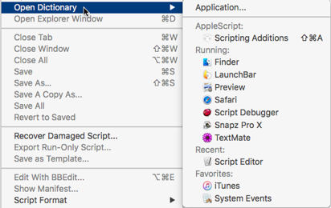

|
Running Applications |
|
If an application is running right now, you can quickly open its dictionary window.
-
Choose File > Open Dictionary. In the resulting hierarchical menu, you’ll see a list headed Running. Choose an application from the menu to open an application’s dictionary window.
 -
In any open dictionary window, locate the application in the dictionaries list at the left side of the window, under Running. Click the name of the application.
-
In the dictionaries inspector, locate the application under Running. Double-click its name, or select its name and click Dictionary, or select its name and choose Open XXX Dictionary from the contextual menu.
-
If what you want to open is the dictionary of the frontmost application, use Script Debugger’s Dock menu. This contains an item, Open XXX Dictionary, where “XXX” is the frontmost application. Choose it, and Script Debugger will come to the front with that application’s dictionary window open.